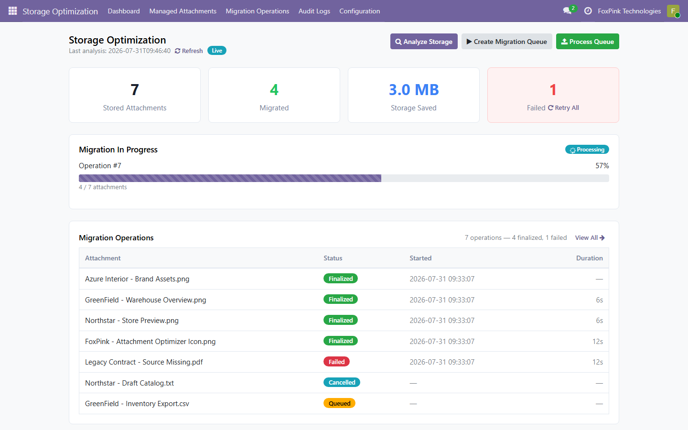
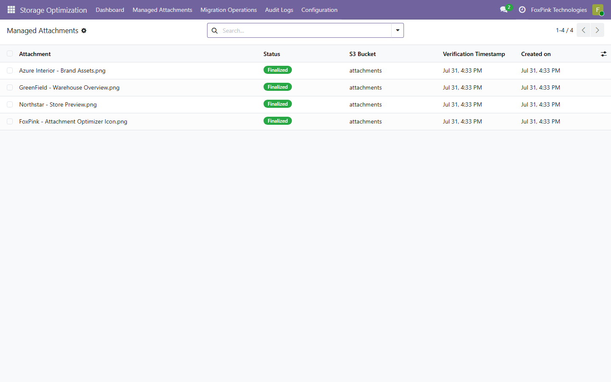
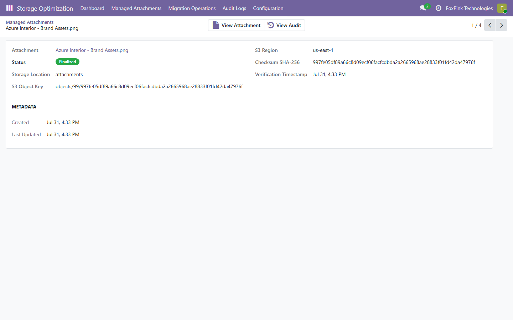
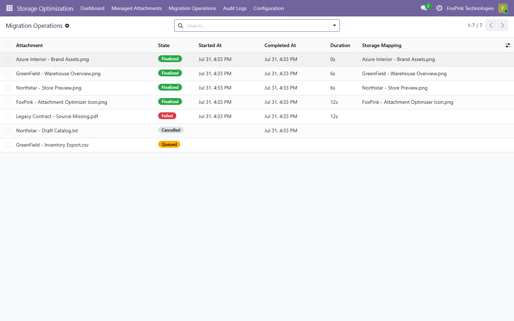
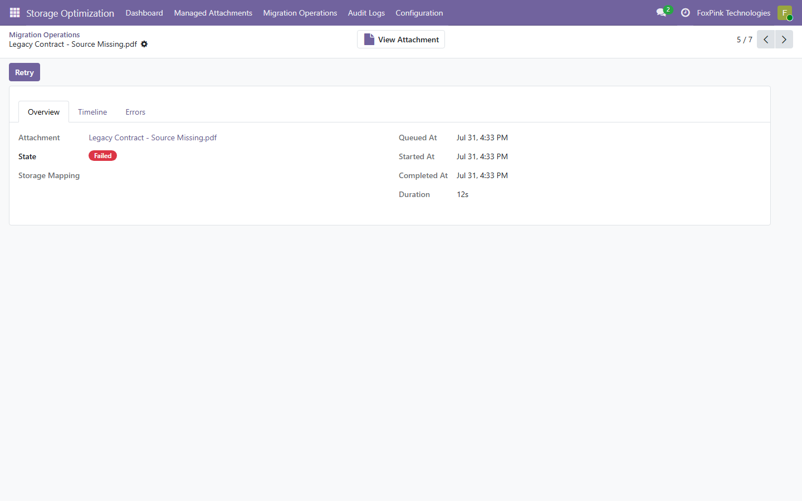
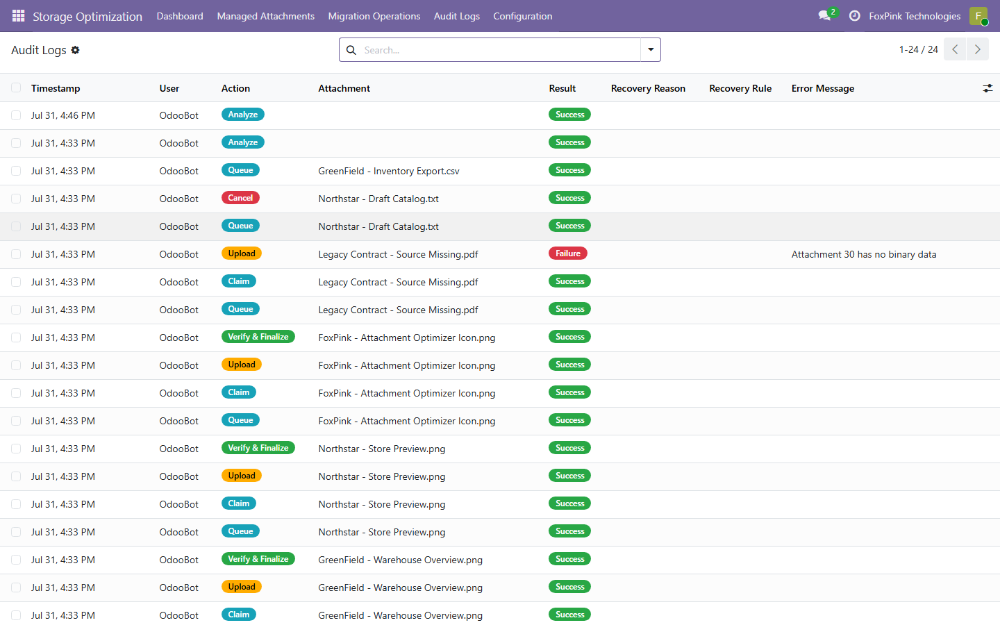
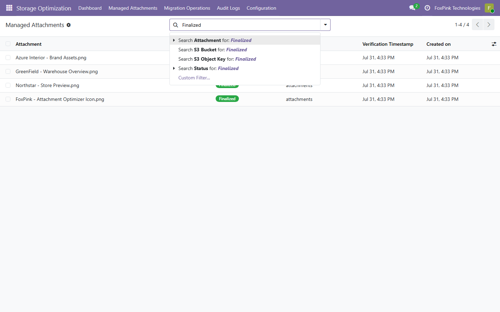
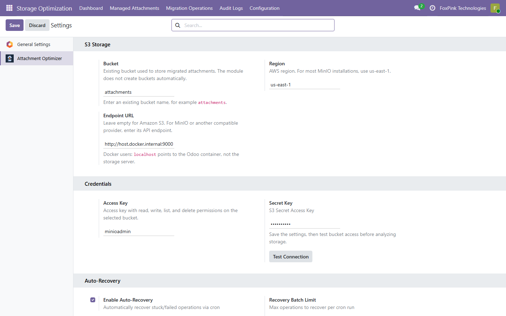
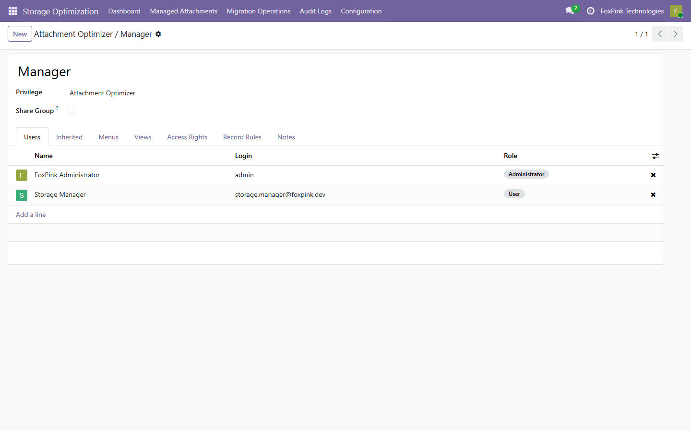

<section class="oe_container">
    <div class="oe_row oe_spaced fd-page" style="max-width:1040px; margin:0 auto;">
        <style>
@media (max-width: 680px) {
  .fd-page { padding-left: 12px !important; padding-right: 12px !important; }
  .fd-page h2 { font-size: 22px !important; }
  .fd-row { display: block !important; }
  .fd-row > div { width: 100% !important; display: block !important; margin-left: 0 !important; margin-right: 0 !important; }
}
</style>

        <!-- HERO -->
        <div style="text-align:center; padding:40px 0 0;">
            <h2 style="font-size:40px; font-weight:800; color:#1e293b; margin:0 0 12px; letter-spacing:-0.5px;">Attachment Optimizer</h2>
            <p style="font-size:18px; color:#64748b; max-width:720px; margin:0 auto 24px; line-height:1.7;">
                Verified S3-compatible storage for Odoo attachments.<br/>
                Replicate, verify and serve attachments with a complete audit trail and filestore fallback.
            </p>
            <div style="margin:0 0 8px;">
                <span style="display:inline-block; border:1px solid #4f46e5; color:#4f46e5; font-weight:700; font-size:13px; padding:6px 16px; margin:4px;">Odoo 14.0 &ndash; 19.0</span>
                <span style="display:inline-block; border:1px solid #4f46e5; color:#4f46e5; font-weight:700; font-size:13px; padding:6px 16px; margin:4px;">Community & Enterprise</span>
                <span style="display:inline-block; border:1px solid #4f46e5; color:#4f46e5; font-weight:700; font-size:13px; padding:6px 16px; margin:4px;">LGPL-3</span>
                <span style="display:inline-block; border:1px solid #4f46e5; color:#4f46e5; font-weight:700; font-size:13px; padding:6px 16px; margin:4px;">S3-compatible</span>
            </div>
            <div style="margin:8px 0 0;">
                
            </div>
        </div>

        <!-- VALUE SUMMARY -->
        <div class="fd-row" style="margin:32px 0; text-align:center;">
            <div style="display:inline-block; width:31%; vertical-align:top; border:1px solid #e2e8f0; border-radius:12px; padding:20px; margin:4px;">
                <div style="font-size:17px; font-weight:800; color:#4f46e5; line-height:1.2;">Safe Migration</div>
                <div style="font-size:12px; color:#64748b; font-weight:600; margin-top:6px;">Upload and verify before activation</div>
            </div>
            <div style="display:inline-block; width:31%; vertical-align:top; border:1px solid #e2e8f0; border-radius:12px; padding:20px; margin:4px;">
                <div style="font-size:17px; font-weight:800; color:#4f46e5; line-height:1.2;">Access Continuity</div>
                <div style="font-size:12px; color:#64748b; font-weight:600; margin-top:6px;">Automatic fallback to the filestore</div>
            </div>
            <div style="display:inline-block; width:31%; vertical-align:top; border:1px solid #e2e8f0; border-radius:12px; padding:20px; margin:4px;">
                <div style="font-size:17px; font-weight:800; color:#4f46e5; line-height:1.2;">No Trial Limits</div>
                <div style="font-size:12px; color:#64748b; font-weight:600; margin-top:6px;">Useful Free Edition under LGPL-3</div>
            </div>
        </div>

        <!-- FEATURES SECTION -->
        <h2 style="font-size:26px; font-weight:800; color:#1e293b; text-align:center; margin:40px 0 8px;">Key features</h2>

        <div class="fd-row" style="display:flex; margin:0 0 8px;">
            <div style="display:inline-block; width:23%; vertical-align:top; border:1px solid #e2e8f0; border-top:3px solid #4f46e5; border-radius:12px; padding:20px; margin:4px; margin-left:auto; text-align:left;">
                <h3 style="font-size:14px; font-weight:700; color:#1e293b; margin:0 0 4px;">Migration pipeline</h3>
                <p style="font-size:13px; color:#64748b; margin:0; line-height:1.5;">Analyze, queue, upload, verify and finalize attachment migration to S3 storage with full audit trail.</p>
            </div>
            <div style="display:inline-block; width:23%; vertical-align:top; border:1px solid #e2e8f0; border-top:3px solid #059669; border-radius:12px; padding:20px; margin:4px; text-align:left;">
                <h3 style="font-size:14px; font-weight:700; color:#1e293b; margin:0 0 4px;">Dashboard</h3>
                <p style="font-size:13px; color:#64748b; margin:0; line-height:1.5;">KPI dashboard with current metrics: eligible attachments, migrated volume, failed operations, and queue progress.</p>
            </div>
            <div style="display:inline-block; width:23%; vertical-align:top; border:1px solid #e2e8f0; border-top:3px solid #d97706; border-radius:12px; padding:20px; margin:4px; text-align:left;">
                <h3 style="font-size:14px; font-weight:700; color:#1e293b; margin:0 0 4px;">S3 bridge</h3>
                <p style="font-size:13px; color:#64748b; margin:0; line-height:1.5;">Configurable S3-compatible storage for AWS S3 and MinIO. Other compatible providers can be validated with the built-in connection test.</p>
            </div>
            <div style="display:inline-block; width:23%; vertical-align:top; border:1px solid #e2e8f0; border-top:3px solid #dc2626; border-radius:12px; padding:20px; margin:4px; margin-right:auto; text-align:left;">
                <h3 style="font-size:14px; font-weight:700; color:#1e293b; margin:0 0 4px;">Checksum verification</h3>
                <p style="font-size:13px; color:#64748b; margin:0; line-height:1.5;">SHA-256 checksum verification after upload ensures data integrity before marking mappings as finalized.</p>
            </div>
        </div>

        <div class="fd-row" style="display:flex; margin:0 0 8px;">
            <div style="display:inline-block; width:23%; vertical-align:top; border:1px solid #e2e8f0; border-top:3px solid #7c3aed; border-radius:12px; padding:20px; margin:4px; margin-left:auto; text-align:left;">
                <h3 style="font-size:14px; font-weight:700; color:#1e293b; margin:0 0 4px;">Transparent serving</h3>
                <p style="font-size:13px; color:#64748b; margin:0; line-height:1.5;">Finalized attachments are served from S3 through Odoo, with automatic filestore fallback if storage is unavailable.</p>
            </div>
            <div style="display:inline-block; width:23%; vertical-align:top; border:1px solid #e2e8f0; border-top:3px solid #0891b2; border-radius:12px; padding:20px; margin:4px; text-align:left;">
                <h3 style="font-size:14px; font-weight:700; color:#1e293b; margin:0 0 4px;">Audit log</h3>
                <p style="font-size:13px; color:#64748b; margin:0; line-height:1.5;">Migration actions are recorded with users, timestamps and results for operational traceability and troubleshooting.</p>
            </div>
            <div style="display:inline-block; width:23%; vertical-align:top; border:1px solid #e2e8f0; border-top:3px solid #ea580c; border-radius:12px; padding:20px; margin:4px; text-align:left;">
                <h3 style="font-size:14px; font-weight:700; color:#1e293b; margin:0 0 4px;">Retry & resume</h3>
                <p style="font-size:13px; color:#64748b; margin:0; line-height:1.5;">Failed uploads can be retried individually or in bulk without creating duplicate storage mappings.</p>
            </div>
            <div style="display:inline-block; width:23%; vertical-align:top; border:1px solid #e2e8f0; border-top:3px solid #4f46e5; border-radius:12px; padding:20px; margin:4px; margin-right:auto; text-align:left;">
                <h3 style="font-size:14px; font-weight:700; color:#1e293b; margin:0 0 4px;">Access control</h3>
                <p style="font-size:13px; color:#64748b; margin:0; line-height:1.5;">Configuration, migration tools and records are restricted to users with the Storage Optimization Manager permission.</p>
            </div>
        </div>

        <!-- WHY CHOOSE -->
        <div style="padding:32px 24px; margin:40px 0;">
            <h2 style="font-size:24px; font-weight:800; color:#1e293b; text-align:center; margin:0 0 24px;">Why Attachment Optimizer?</h2>
            <div class="fd-row" style="display:flex;">
                <div style="display:inline-block; width:30%; vertical-align:top; border:1px solid #e2e8f0; border-radius:12px; padding:20px 16px; margin:4px; margin-left:auto; text-align:left;">
                    <div style="font-size:18px; font-weight:700; color:#4f46e5; margin:0 0 6px;">Useful Free Edition</div>
                    <p style="font-size:13px; color:#64748b; margin:0; line-height:1.6;">Licensed under LGPL-3. Core migration safety, checksum verification, retry, recovery, dashboard, fallback, and audit features are included without trial limits.</p>
                </div>
                <div style="display:inline-block; width:30%; vertical-align:top; border:1px solid #e2e8f0; border-radius:12px; padding:20px 16px; margin:4px; text-align:left;">
                    <div style="font-size:18px; font-weight:700; color:#4f46e5; margin:0 0 6px;">Access Continuity</div>
                    <p style="font-size:13px; color:#64748b; margin:0; line-height:1.6;">Attachments remain accessible via Odoo during and after migration. Transparent S3 serving with automatic fallback to filestore.</p>
                </div>
                <div style="display:inline-block; width:30%; vertical-align:top; border:1px solid #e2e8f0; border-radius:12px; padding:20px 16px; margin:4px; margin-right:auto; text-align:left;">
                    <div style="font-size:18px; font-weight:700; color:#4f46e5; margin:0 0 6px;">Operational Visibility</div>
                    <p style="font-size:13px; color:#64748b; margin:0; line-height:1.6;">Monitor eligible attachments, migrated volume, failures and queue progress from one dashboard.</p>
                </div>
            </div>
        </div>

        <!-- FREE AND PRO ROADMAP -->
        <h2 style="font-size:26px; font-weight:800; color:#1e293b; text-align:center; margin:40px 0 8px;">Start Free. Scale with Pro.</h2>
        <p style="font-size:14px; color:#64748b; text-align:center; max-width:760px; margin:0 auto 20px; line-height:1.7;">
            The Free Edition provides a complete safety layer for assessing and replicating Odoo attachments to S3. The planned Pro Edition will add automated offloading and storage-cost optimization for larger environments.
        </p>
        <div class="fd-row" style="display:flex; margin:0 0 16px;">
            <div style="display:inline-block; width:47%; vertical-align:top; border:2px solid #4f46e5; border-radius:12px; padding:22px; margin:4px; margin-left:auto; text-align:left;">
                <div style="font-size:19px; font-weight:800; color:#4f46e5; margin-bottom:4px;">Free Edition</div>
                <div style="font-size:12px; color:#64748b; margin-bottom:14px;">Available now &middot; LGPL-3 &middot; No trial limits</div>
                <p style="font-size:13px; color:#334155; line-height:1.8; margin:0;">
                    &#10003; Storage analysis and candidate discovery<br/>
                    &#10003; Manual migration queues<br/>
                    &#10003; SHA-256 upload verification<br/>
                    &#10003; Dashboard, retry and recovery<br/>
                    &#10003; Filestore fallback and rollback safety<br/>
                    &#10003; Access control and append-only audit trail
                </p>
            </div>
            <div style="display:inline-block; width:47%; vertical-align:top; border:2px solid #059669; border-radius:12px; padding:22px; margin:4px; margin-right:auto; text-align:left;">
                <div style="font-size:19px; font-weight:800; color:#059669; margin-bottom:4px;">Pro Roadmap</div>
                <div style="font-size:12px; color:#64748b; margin-bottom:14px;">Planned &middot; Automation and measurable storage savings</div>
                <p style="font-size:13px; color:#334155; line-height:1.8; margin:0;">
                    &#9675; Verified local cleanup with retention<br/>
                    &#9675; Automatic routing for new attachments<br/>
                    &#9675; One-click restore to filestore<br/>
                    &#9675; Lifecycle policies and scheduled processing<br/>
                    &#9675; Multi-bucket routing policies<br/>
                    &#9675; Cost analytics, alerts and scale controls
                </p>
            </div>
        </div>
        <div style="border:1px solid #bae6fd; background:#f0f9ff; border-radius:10px; padding:14px 20px; color:#075985; text-align:center; font-size:13px; line-height:1.6;">
            <strong>Transparent roadmap:</strong> Pro features are planned and are not included in version 19.0.1.0.2. Every feature presented elsewhere on this page is included in the Free Edition.
        </div>

        <!-- SCREENSHOTS GALLERY -->
        <h2 style="font-size:26px; font-weight:800; color:#1e293b; text-align:center; margin:40px 0 8px;">Screenshots</h2>

        <div style="margin:0 0 24px;">
            <div style="border:1px solid #e2e8f0; border-radius:12px; overflow:hidden; margin-bottom:16px;">
                
            </div>
            <p style="font-size:13px; color:#64748b; text-align:center; margin:-8px 0 24px;">Storage Optimization Dashboard</p>
            <div style="border:1px solid #e2e8f0; border-radius:12px; overflow:hidden; margin-bottom:16px;">
                
            </div>
            <p style="font-size:13px; color:#64748b; text-align:center; margin:-8px 0 24px;">Storage Mappings List</p>
            <div style="border:1px solid #e2e8f0; border-radius:12px; overflow:hidden; margin-bottom:16px;">
                
            </div>
            <p style="font-size:13px; color:#64748b; text-align:center; margin:-8px 0 24px;">Storage Mapping Form</p>
            <div style="border:1px solid #e2e8f0; border-radius:12px; overflow:hidden; margin-bottom:16px;">
                
            </div>
            <p style="font-size:13px; color:#64748b; text-align:center; margin:-8px 0 24px;">Migration Operations List</p>
            <div style="border:1px solid #e2e8f0; border-radius:12px; overflow:hidden; margin-bottom:16px;">
                
            </div>
            <p style="font-size:13px; color:#64748b; text-align:center; margin:-8px 0 24px;">Migration Operation Form</p>
            <div style="border:1px solid #e2e8f0; border-radius:12px; overflow:hidden; margin-bottom:16px;">
                
            </div>
            <p style="font-size:13px; color:#64748b; text-align:center; margin:-8px 0 24px;">Audit Log List</p>
            <div style="border:1px solid #e2e8f0; border-radius:12px; overflow:hidden; margin-bottom:16px;">
                
            </div>
            <p style="font-size:13px; color:#64748b; text-align:center; margin:-8px 0 24px;">Storage Mappings Search</p>
            <div style="border:1px solid #e2e8f0; border-radius:12px; overflow:hidden; margin-bottom:16px;">
                
            </div>
            <p style="font-size:13px; color:#64748b; text-align:center; margin:-8px 0 24px;">Settings &mdash; Attachment Optimizer tab</p>
            <div style="border:1px solid #e2e8f0; border-radius:12px; overflow:hidden; margin-bottom:16px;">
                
            </div>
            <p style="font-size:13px; color:#64748b; text-align:center; margin:-8px 0 24px;">Access Rights / Groups</p>
        </div>

        <!-- FAQ -->
        <h2 style="font-size:22px; font-weight:800; color:#1e293b; text-align:center; margin:40px 0 8px;">Frequently asked questions</h2>
        <div style="margin:8px 0 40px;">
            <div style="border:1px solid #e2e8f0; border-radius:12px; padding:20px 24px; margin-bottom:12px;">
                <div style="display:flex; align-items:flex-start;">
                    <div style="width:28px; height:28px; border-radius:8px; border:1px solid #eef2ff; line-height:28px; text-align:center; font-size:14px; color:#4f46e5; font-weight:700; margin-right:12px; flex-shrink:0;">?</div>
                    <div>
                        <div style="font-size:14px; font-weight:700; color:#1e293b; margin:0 0 4px;">Is this module really free?</div>
                        <p style="font-size:13px; color:#64748b; margin:0; line-height:1.6;">Yes. The Free Edition is licensed under LGPL-3 and includes every feature listed on this page outside the clearly marked Pro Roadmap, with no trial period or subscription required.</p>
                    </div>
                </div>
            </div>
            <div style="border:1px solid #e2e8f0; border-radius:12px; padding:20px 24px; margin-bottom:12px;">
                <div style="display:flex; align-items:flex-start;">
                    <div style="width:28px; height:28px; border-radius:8px; border:1px solid #eef2ff; line-height:28px; text-align:center; font-size:14px; color:#4f46e5; font-weight:700; margin-right:12px; flex-shrink:0;">?</div>
                    <div>
                        <div style="font-size:14px; font-weight:700; color:#1e293b; margin:0 0 4px;">Does it work with Odoo Enterprise?</div>
                        <p style="font-size:13px; color:#64748b; margin:0; line-height:1.6;">Yes. The module is compatible with both Community and Enterprise editions. No Enterprise modules are required as dependencies.</p>
                    </div>
                </div>
            </div>
            <div style="border:1px solid #e2e8f0; border-radius:12px; padding:20px 24px; margin-bottom:12px;">
                <div style="display:flex; align-items:flex-start;">
                    <div style="width:28px; height:28px; border-radius:8px; border:1px solid #eef2ff; line-height:28px; text-align:center; font-size:14px; color:#4f46e5; font-weight:700; margin-right:12px; flex-shrink:0;">?</div>
                    <div>
                        <div style="font-size:14px; font-weight:700; color:#1e293b; margin:0 0 4px;">Are original attachments deleted from the filestore?</div>
                        <p style="font-size:13px; color:#64748b; margin:0; line-height:1.6;">No. The module keeps the original attachment in Odoo's filestore and uses it automatically if the S3 copy cannot be read.</p>
                    </div>
                </div>
            </div>
            <div style="border:1px solid #e2e8f0; border-radius:12px; padding:20px 24px; margin-bottom:12px;">
                <div style="display:flex; align-items:flex-start;">
                    <div style="width:28px; height:28px; border-radius:8px; border:1px solid #eef2ff; line-height:28px; text-align:center; font-size:14px; color:#4f46e5; font-weight:700; margin-right:12px; flex-shrink:0;">?</div>
                    <div>
                        <div style="font-size:14px; font-weight:700; color:#1e293b; margin:0 0 4px;">Which S3 providers are supported?</div>
                        <p style="font-size:13px; color:#64748b; margin:0; line-height:1.6;">AWS S3 and MinIO are supported. Other providers implementing the S3 API may also work and can be checked before migration with the built-in connection test. Configure the endpoint, region, bucket and credentials in Settings.</p>
                    </div>
                </div>
            </div>
        </div>

        <!-- COMPATIBILITY -->
        <div style="padding:28px; margin:40px 0 8px;">
            <h2 style="font-size:22px; font-weight:800; color:#1e293b; margin:0 0 20px; text-align:center;">Compatibility</h2>
            <div style="text-align:center;">
                <div style="display:inline-block; border:1px solid #bbf7d0; border-radius:8px; padding:6px 14px; margin:4px;">
                    <span style="color:#16a34a; font-size:14px;">&#10003;</span>
                    <span style="font-size:13px; font-weight:600; color:#166534;">14.0</span>
                </div>
                <div style="display:inline-block; border:1px solid #bbf7d0; border-radius:8px; padding:6px 14px; margin:4px;">
                    <span style="color:#16a34a; font-size:14px;">&#10003;</span>
                    <span style="font-size:13px; font-weight:600; color:#166534;">15.0</span>
                </div>
                <div style="display:inline-block; border:1px solid #bbf7d0; border-radius:8px; padding:6px 14px; margin:4px;">
                    <span style="color:#16a34a; font-size:14px;">&#10003;</span>
                    <span style="font-size:13px; font-weight:600; color:#166534;">16.0</span>
                </div>
                <div style="display:inline-block; border:1px solid #bbf7d0; border-radius:8px; padding:6px 14px; margin:4px;">
                    <span style="color:#16a34a; font-size:14px;">&#10003;</span>
                    <span style="font-size:13px; font-weight:600; color:#166534;">17.0</span>
                </div>
                <div style="display:inline-block; border:1px solid #bbf7d0; border-radius:8px; padding:6px 14px; margin:4px;">
                    <span style="color:#16a34a; font-size:14px;">&#10003;</span>
                    <span style="font-size:13px; font-weight:600; color:#166534;">18.0</span>
                </div>
                <div style="display:inline-block; border:1px solid #bbf7d0; border-radius:8px; padding:6px 14px; margin:4px;">
                    <span style="color:#16a34a; font-size:14px;">&#10003;</span>
                    <span style="font-size:13px; font-weight:600; color:#166534;">19.0</span>
                </div>
            </div>
            <p style="font-size:12px; color:#94a3b8; margin:16px 0 0; text-align:center;">Community & Enterprise &middot; Amazon S3 and MinIO &middot; Odoo.sh and on-premise deployments</p>
        </div>

        <!-- INSTALLATION -->
        <h2 style="font-size:22px; font-weight:800; color:#1e293b; text-align:center; margin:40px 0 8px;">Installation</h2>
        <div style="border:1px solid #f59e0b; border-radius:10px; padding:14px 20px; margin:8px 0 12px; color:#92400e;">
            <strong>Server requirement:</strong> Install the Python package <code>boto3</code> in the Odoo runtime before installing this app. This app is intended for Odoo.sh and on-premise/Docker deployments and is not compatible with Odoo Online.
        </div>
        <div style="margin:8px 0;">
            <div style="display:flex; border:1px solid #e2e8f0; border-radius:10px; padding:14px 20px; margin-bottom:8px;">
                <div style="flex-shrink:0; width:32px; height:32px; border-radius:50%; border:2px solid #4f46e5; color:#4f46e5; font-size:14px; font-weight:800; line-height:32px; text-align:center; margin-right:14px; margin-top:auto; margin-bottom:auto;">1</div>
                <div style="margin-top:auto; margin-bottom:auto;"><span style="font-weight:600; color:#1e293b;">Install boto3 and the module</span>. Odoo dependencies (base, web) install automatically.</div>
            </div>
            <div style="display:flex; border:1px solid #e2e8f0; border-radius:10px; padding:14px 20px; margin-bottom:8px;">
                <div style="flex-shrink:0; width:32px; height:32px; border-radius:50%; border:2px solid #4f46e5; color:#4f46e5; font-size:14px; font-weight:800; line-height:32px; text-align:center; margin-right:14px; margin-top:auto; margin-bottom:auto;">2</div>
                <div style="margin-top:auto; margin-bottom:auto;"><span style="font-weight:600; color:#1e293b;">Configure S3 credentials</span> in <strong>Settings &rarr; General Settings &rarr; Attachment Optimizer</strong>.</div>
            </div>
            <div style="display:flex; border:1px solid #e2e8f0; border-radius:10px; padding:14px 20px; margin-bottom:8px;">
                <div style="flex-shrink:0; width:32px; height:32px; border-radius:50%; border:2px solid #4f46e5; color:#4f46e5; font-size:14px; font-weight:800; line-height:32px; text-align:center; margin-right:14px; margin-top:auto; margin-bottom:auto;">3</div>
                <div style="margin-top:auto; margin-bottom:auto;"><span style="font-weight:600; color:#1e293b;">Open the Dashboard</span>, test the connection, then run <strong>Analyze Storage</strong> to identify eligible attachments.</div>
            </div>
            <div style="display:flex; border:1px solid #e2e8f0; border-radius:10px; padding:14px 20px; margin-bottom:8px;">
                <div style="flex-shrink:0; width:32px; height:32px; border-radius:50%; border:2px solid #4f46e5; color:#4f46e5; font-size:14px; font-weight:800; line-height:32px; text-align:center; margin-right:14px; margin-top:auto; margin-bottom:auto;">4</div>
                <div style="margin-top:auto; margin-bottom:auto;"><span style="font-weight:600; color:#1e293b;">Create and process the queue</span>, then monitor results in <strong>Migration Operations</strong> and verify attachment downloads.</div>
            </div>
            <div style="display:flex; border:1px solid #059669; border-radius:10px; padding:14px 20px; margin-bottom:8px;">
                <div style="flex-shrink:0; width:32px; height:32px; border-radius:50%; border:2px solid #059669; color:#059669; font-size:14px; font-weight:800; line-height:32px; text-align:center; margin-right:14px; margin-top:auto; margin-bottom:auto;">&#10003;</div>
                <div style="font-weight:600; color:#059669; margin-top:auto; margin-bottom:auto;">Done &mdash; attachments served from S3 automatically!</div>
            </div>
        </div>

        <!-- FOOTER -->
        <div style="border:1px solid #e2e8f0; border-radius:16px; padding:32px 24px; margin:40px 0 16px; text-align:center;">
            <div style="font-size:14px; font-weight:700; color:#1e293b; text-transform:uppercase; letter-spacing:1px; margin:0 0 12px;">Attachment Optimizer</div>
            <p style="font-size:13px; color:#64748b; margin:0 auto 16px; line-height:1.6; max-width:480px;">
                Open-source, verified S3 replication and serving for Odoo attachments.
                Licensed under LGPL-3 &mdash; free to use, modify and distribute.
            </p>
            <div style="display:inline-block; border:2px solid #4f46e5; color:#4f46e5; font-weight:700; font-size:13px; padding:10px 28px; border-radius:8px; letter-spacing:0.2px;">github.com/FoxPinkHQ/attachment-optimizer</div>
            <p style="font-size:11px; color:#94a3b8; margin:20px 0 0;">Version 19.0.1.0.2 &middot; Built and maintained by FoxPink</p>
        </div>

    </div>
</section>
